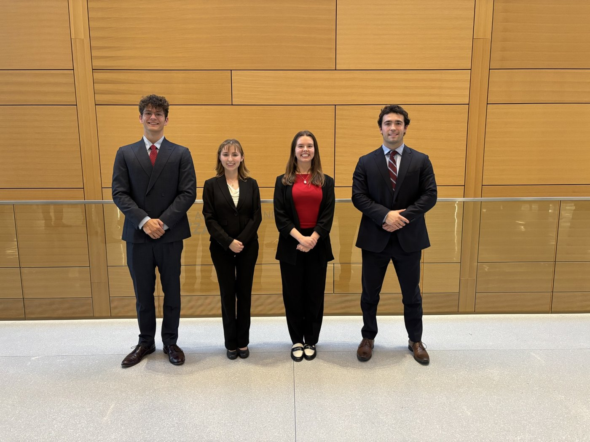
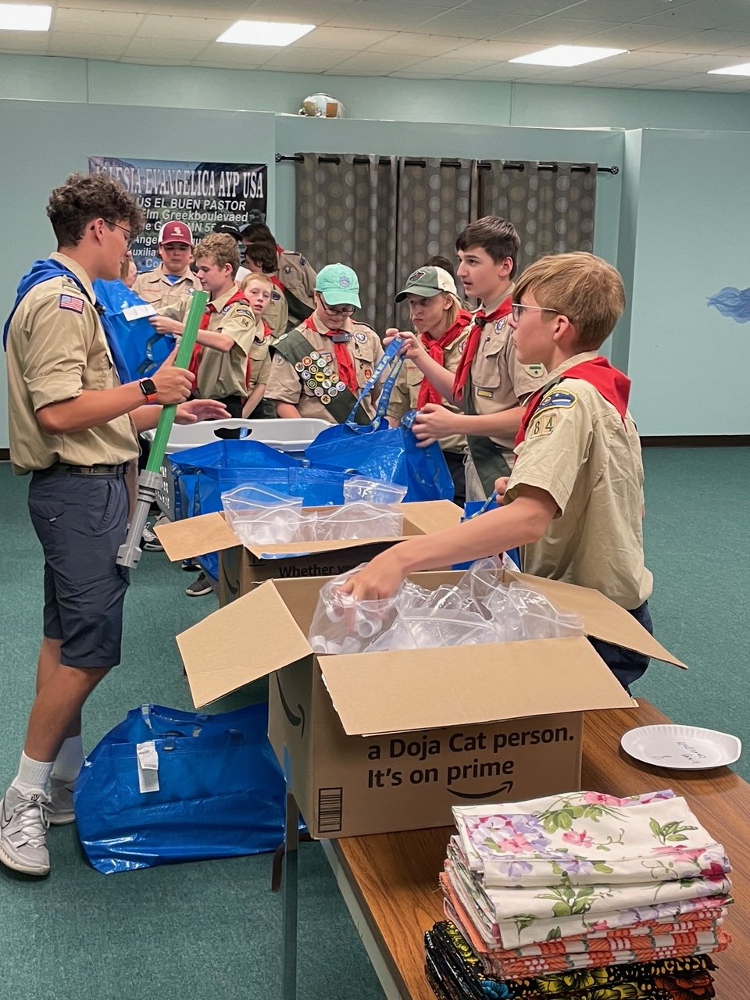

Rather than relying only on the tools I was handed, I build my own — here's what that's produced so far.
A real-time competitive intelligence dashboard built in Power BI, fed by a Python pipeline of 12 custom scrapers pulling roughly 250 signals a day from real, live sources. Rather than producing a static report, Predict is built as an operator's tool — four integrated modules the sales team can actually work from:
- Heat map — geographic view of competitor concentration and activity across the territory, surfacing where competition is thickest and where whitespace still exists.
- Pre-call planner — pulls competitor history, recent awards, and known contract patterns for a target account into a single briefing view before an outreach call.
- Predictive scoring model — ranks accounts by likelihood of near-term opportunity based on the observed signals, so limited outreach time gets spent on the accounts most likely to move.
- Live signal feed — continuous incoming data from public and federal sources, so what the dashboard shows is the state of the market today, not last quarter.
The goal was to turn scattered, publicly available information that nobody had time to synthesize into a single source of truth for who's competing where, on what, and how often — so BD decisions get made with real intelligence rather than gut feel.
Shadowed Liam Gillespie at Verdant Commercial Capital in Spring 2026 for a firsthand look at inside sales. The biggest takeaway was how the profession itself is evolving — the traditional model of pure relationship-building is giving way to more referral-driven selling, where trust is transferred through networks rather than built from scratch every call. Equally striking was how much the day-to-day depends on being embedded in a tight-knit internal team; inside sales isn't a solo act, and the reps who thrive are the ones who invest as much in their colleagues as they do in their customers.
Shadowed Taylor Cook at Polaris in Spring 2026 to see outside sales in the field. The core lesson was that growth doesn't only come from new logos — a lot of it comes from expanding inside accounts you already have, by paying close attention to what each customer actually needs next and matching them to it before they ask. Watching that in practice reframed how I think about a "pipeline": not just a list of prospects, but a live map of existing relationships where the next opportunity is usually already there if you're looking.

Finished 3rd overall in the Baylor Business Ethics Competition, a team-based ProSales competition where four-person teams present formal recommendations on complicated real-world ethical business issues. Each team gets 15 minutes to present and 5 minutes to defend their reasoning against a panel of executive judges. The format demands both rigorous case analysis and the composure to hold up under real Q&A pressure — no rehearsed answer will get you through it. Competed alongside teammates Gianni Caltagirone, Ava Truan, and Maegan Womack. See the official results →

Planned, built, and led the delivery of 20 manicure stations for Imara International, a nonprofit in Nanyuki, Kenya that provides at-risk teen mothers with vocational training in trades including salon work. The stations were built to spec so Imara's residents could learn — and eventually run — real salon services as a path to income. Directed a team of 20 fellow Scouts through assembly and quality verification, coordinating logistics from raw materials all the way through finished, inspected stations ready to ship overseas.